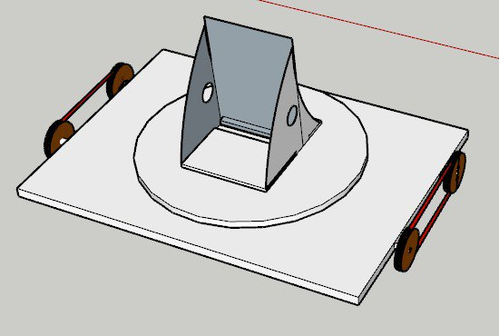
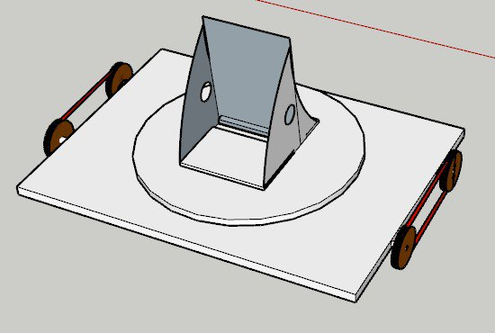

20 July 2023
Project:
Today we brainstorm possible ways to use smartibot to make teaching engaging. Here are some of our ideas.
1. AI Drawing Bot: Use artificial intelligence for the bot the learn and draw pictures
2. AI Race Cource: Use artificial intelligence to study and navigate around the course and race to see which team is the fastest.
3. AI Football: Use artificial intelligence to challenge teams in a robot football match
4. Obstacle Course: Use artificial intelligence to study and navigate a course and see which robot can navigate the most optimal way.
5. Paddle Boat Race: Create a AI paddle boat that is able to navigate the river and compete to see who is the fastest.

We have also identified some limitations of the smartibot. It does not have an area to secure the phone, the initial way was to tie a rubber band around it. We decided to change one of the pieces to allow the phone to be placed without the use of rubber bands.


Prototype V1:
Before:
After:
Experiment:
With phone
21 July 2023
We today realise that we were going off track, we were too focus on how we make the lessons engaging instead of designing the Curio bot and we focus more on improving the Smartibot instead of the Curio.
We immediately rectify by meeting the client and clarify our doubts. After the meeting we managed to get everyone aligned and draft a suitable markup of the prototype.
Prototype:


After today, we have a first hand experience on why aligning with everyone in the team and
the customer is important as it saves time and effect in creating prototype and the final product.
24 July 2023
Today, we manage to design new prototypes by combining ideas from the previous 3D model and also ideas provided by other teams.
3D model (Tank):
For this design we got the inspiration from a real life tank. Basically, we allow user to rotate the top
base to help them orientate the bot, so it does not matter which side of the bot is the front. The bot
would be able to rotate using servos which will fit to the teeth shape groves below.
 

Reliant Robin:
For this design, we asked group 9 about their proposal idea to draw inspiration for our design. They
were planning to create quizes and make the bots race. So we design one where it has car-like
shape. We based the design of the reliant robin as it is an iconic vehicle in the UK. We also can
save cost on material by making 2 wheels instead of 4.


Prototype:
We also manage to do up a working prototype of the Reliant Robin design. Although there are a
few kinks to fix like if the phone is place at the back it will be back heavy, motors will come loose
and most parts are glued so not a lot of ways to dismentle.

Tomorrow, we plan to continue working on the prototype for the tank design and improving the current prototype.
31 July 2023
We added a second servo to able to support tilting of phone. We also receive feedback on how to conduct testing by the professor where the user can be at the other room controlling and looking at the camera of the bot to test the mobility and visibility.

We continued working on the website and poster design as well. Here is the initial design of the poster.
Tomorrow, we will start to conduct our usability testing, continue working on website and poster.
1 August 2023
Received constructive feedback on the poster and the website. We have also plan to add instructions on how to build our prototype.
Website:
Home page Reflection Page
Poster:

Instructions

Tomorrow We will make finishing touches to the poster, website and testings before the big day on Thursday.